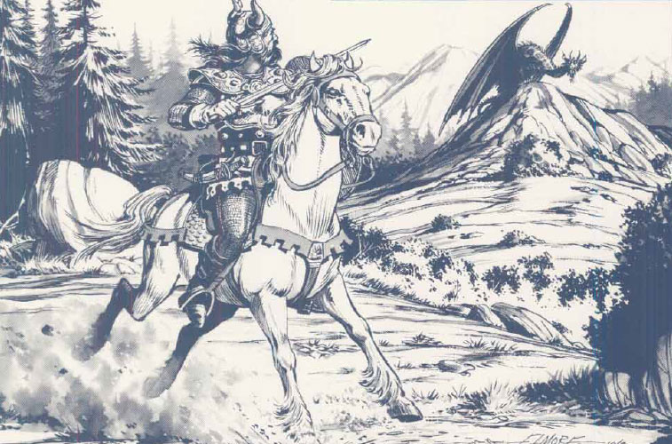
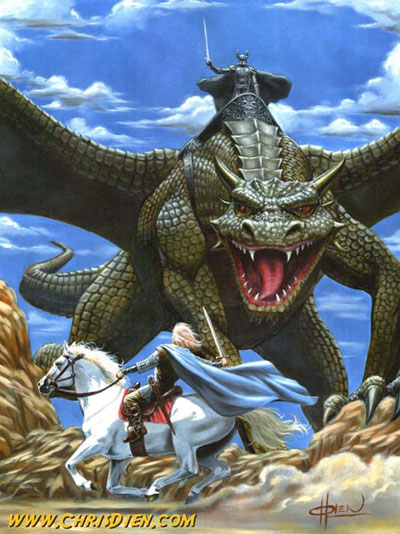

Cavalcare una cavalcatura
Queste regole si applicano quando si cavalca una
cavalcatura addomesticata. Si noti che per cavalcare non
occorre possedere la competenza "riding".
Salire o scendere da una cavalcatura si considera un'azione. Il personaggio quindi potrà salire sulla stessa compiendo al massimo metà del suo movimento ed, in ogni caso, potrà far muovere la cavalcatura solo a partire dal round successivo. Una volta sceso, invece, potrà effettuare metà del suo movimento ma nessuna altra azione.
Un personaggio può salire o scendere dalla cavalcatura solo quando questa è ferma.
Il personaggio necessita di morsi, briglie, selle e finimenti per cavalcare e deve impiegare una mano per guidare la cavalcatura (non potrà quindi usare armi a due mani e da tiro cavalcando).
Al mezzo movimento del personaggio si sostituisce quello della cavalcatura (ad esempio ai fini del movimento e dell'iniziativa).
Mentre si cavalca non è possibile lanciare incantesimi che abbiano componenti somatici.
Competenza "Riding,
Land Based"
Generale, Destrezza 0
Quando questa competenza viene imparata
per la prima volta il personaggio deve scegliere un particolare tipo di
cavalcatura terrestre che intende saper cavalcare (cavalli, lupi ancestrali,
lucertole giganti, ecc...). Per saper cavalcare altre creature la competenza
deve essere presa nuovamente. Solo chi ha questa competenza può effettuare le
seguenti manovre speciali. Si noti che tutte le prove in questa competenza
ricevono alcune penalità quando il personaggio indossa alcune armature:
corazze metalliche snodate, -1 alla prova sulla
competenza.
corazze metalliche
rigide, -2 alla prova sulla competenza.
corazze metalliche rigide pesanti, -4 alla
prova sulla competenza.
* Il personaggio può cavalcare la cavalcatura senza sella, briglie e finimenti ma avrà una penalità di -3 a tutte le sue prove in questa competenza.
* Il personaggio può salire sulla
cavalcatura quando questa è ferma e farla muovere di metà del suo movimento
nello stesso round. Per fare ciò deve effettuare una prova sulla competenza. Se
la prova fallisce il personaggio sarà salito ma la cavalcatura non si sarà
mossa.
* Il personaggio può salire sulla cavalcatura anche quando questa è in
movimento. Per fare ciò deve riuscire a raggiungere la cavalcatura con il suo
mezzo movimento ed effettuare una prova sulla competenza. Se la prova fallisce
il personaggio cadrà al suolo.
* Il personaggio può guidare la
cavalcatura utilizzando solo le ginocchia. In questo modo potrà utilizzare armi
a due mani, due armi, arma e scudo o armi da tiro. Per utilizzare questa
abilità non occorre alcuna prova ma è necessario aver imparato completamente
la competenza.
* Il personaggio può saltare giù da
una cavalcatura (che si sia mossa al massimo di metà del suo movimento) ed
atterrare in corpo a corpo con un bersaglio effettuando anche i suoi attacchi
(si applica l'iniziativa di mezzo movimento della cavalcatura).
Per effettuare tale manovra il personaggio deve effettuare una prova nella
competenza a -4 di penalità. Se la prova fallisce si considererà caduto.
* Ogni volta che il personaggio cade dalla cavalcatura (anche fallendo una delle prove precedente) può effettuare una prova in questa competenza con penalità di -1, con penalità di -2 se la cavalcatura è di dimensioni huge e -4 se la cavalcatura è di dimensioni gargantuan. Se la prova a successo il personaggio avrà attutito tutti i danni della caduta. Se la prova riesce con un 1 naturale sarà anche caduto in piedi. Se la prova è fallita con un 20 non potrà effettuare il tiro salvezza per dimezzare il danno e la caduta provocherà un effetto critico.

Combattere da una cavalcatura
Chi combatte su una cavalcatura riceve un bonus di +1 alla Tach0 e -1 all'iniziativa contro le creature di size inferiore rispetto a quella della sua cavalcatura, queste, inoltre, avranno -1 al tiro per colpire contro costui (ma non contro la cavalcatura).
Si noti che chi combatte su una cavalcatura si trova in una posizione sopraelevata può non essere in grado di raggiungere con le proprie armi bersagli più piccoli e, al contrario, per costoro potrà essere impossibile raggiungere colui che cavalca.
Chi usa un'arma small può colpire solo
creature fino ad una size inferiore rispetto alla sua cavalcatura (e viceversa).
Chi usa un'arma medium e large può, invece, colpire creature fino a due
size inferiori rispetto a quella della sua cavalcatura (e viceversa).
Chi usa una polearm di almeno 3.30 metri può colpire creature fino a tre size
inferiori rispetto alla sua cavalcatura (e viceversa).
Le creature senza armi possono colpire solo bersagli che cavalcano creature di una size superiore rispetto alla propria (ovviamente potranno sempre combattere contro la cavalcatura).
Ad esempio un guerriero a cavallo (cavalcatura large) armato di spada lunga (arma medium) potrà colpire creature di taglia small o superiore. Per essere colpito dovrà essere attaccato almeno da creature di taglia small che usino armi medium o large, oppure da creature di taglia medium che usino armi piccole o attacchi naturali.
Non tutte le cavalcature sono addestrate al combattimento. Chi combatte su una cavalcatura non addestrata al combattimento, che non abbia intelligenza superiore a Semi (4), riceve una penalità di -2 ai tiri per colpire a causa dei suoi costanti tentativi di tenerla a bada (si pensi ad esempio ad un cavallo "riding").
Cadere da una cavalcatura
Chi combatte su una cavalcatura corre il rischio di cadere dalla stessa. Ciò avviene automaticamente se costui o la cavalcatura stessa muore, perde i sensi o cade a terra (knockdown).
Alla caduta il passeggero, oltre a ritrovarsi knockdown, subirà 1d6 punti di danno da caduta (2d6 se la cavalcatura è di taglia huge e 3d6 se è gargantuan), tali danni potranno essere dimezzati superando un tiro salvezza contro paralisi.
Utilizzare armi da tiro su cavalcatura
Chi si trova su una cavalcatura può utilizzare le armi da tiro solo se possiede la competenza "riding". In ogni caso solo archi corti, archi corti compositi, balestra da mano, balestra leggera e cerbottana possono essere utilizzate montando su una sella.
Se la cavalcatura non si muove chi spara può farlo senza penalità ed a pieno rate of fire.
Se invece la cavalcatura è in movimento chi spara dimezza il suo rate of fire (se è pari ad 1 diventa 1 colpo ogni due round) e subisce una penalità che varia a seconda della velocità della cavalcatura come mostrato in questa tabella:
La cavalcatura si muove fino a 1/2 del
suo fattore movimento: -1 alla thac0
La cavalcatura si muove ad oltre la metà del suo fattore movimento: -3
alla thac0
La cavalcatura si muove di tutto il suo movimento o più veloce: -5
alla thac0
Ad
esempio una cavalcatura con movimento 18 darà le seguenti penalità:
Fattore movimento 0, Nessuna penalità
Da fattore movimento 1 a 9, -1 alla thac0
Da fattore movimento 10 a 17, -3 alla thac0
Da fattore movimento 18 in poi, -5 alla thac0
Mantenere il controllo di una cavalcatura
Ogni volta che una qualsiasi cavalcatura, che non abbia intelligenza superiore a Semi (4), viene ferita oppure è sorpresa da un evento improvviso che, a parere del Dungeon Master, possa spaventarla (ad es. l'avvicinarsi di una creatura spaventosa o il lancio di una magia come "lighting bolt") questa deve superare una prova di morale altrimenti andrà in panico (ciò avviene anche quando la creatura sarà soggetta a fear o spaventata dalla magia o da un altro potere). Quando una creatura va in panico chi la cavalca deve effettuare una prova di "riding" (se non ha questa competenza la prova si considera immediatamente fallita). Se la prova ha successo costui riuscirà a mantenere il controllo della creatura, altrimenti la creatura fuggirà al 150% del suo movimento allontanandosi dal pericolo per 1d4 rounds. In ognuno di questi round chi la cavalca deve cercare di restare in groppa alla stessa senza poter effettuare altre azioni e, per farlo, dovrà effettuare una prova sul suo punteggio combinato di forza e destrezza (valutato per difetto), con un bonus di +4 se si ha la competenza "riding". In caso di fallimento chi cavalca cadrà al suolo.
Cavalcature con intelligenza superiore a Semi (4) possono agire liberamente non essendo realmente sotto il "controllo" di chi le cavalca. Qualora queste decidano di fuggire lo faranno e chi le cavalca non potrà fermarle facilmente, lo stesso dicasi per l'ipotesi in cui decidano di disarcionare chi le cavalca.
Cavalcature specificamente addestrate a combattere non dovranno effettuare la prova di morale fino a che non subiranno una ferita che le porti al grado di ferito gravemente, ossia ad un ammontare di danni subiti superiore alla metà dei loro punti ferita massimi. Quando raggiungono tale soglia dovranno effettuare la prova di morale ad ogni ulteriore e nuova ferita.